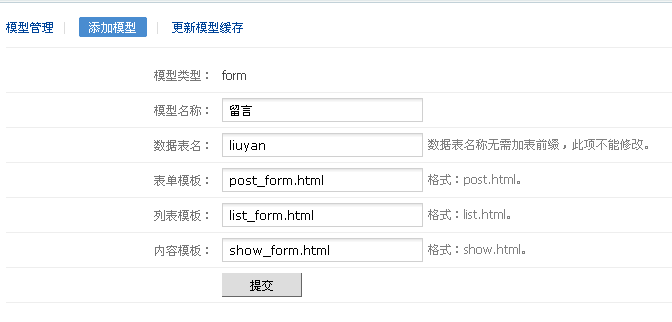
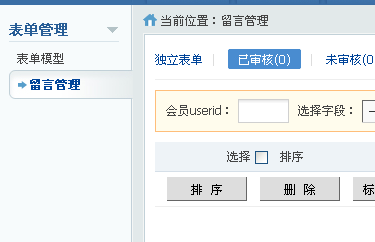
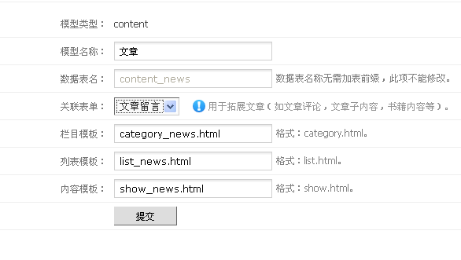

表单，顾名思义就是与前端用户提交数据相关的，如报名、留言、评论等
FineCMS系统支持两种类型的表单，即是独立表单和关联表单
一、独立表单介绍
1、创建表单
后台进入“表单管理”，选择“表单模型”，再“添加”模型

表单模板：提交表单的模板（默认模板中包含“post_form.html”）
列表模板：表单数据列表的模板（默认模板中包含“list_form.html”）
内容模板：表单数据详细内容的模板（默认模板中包含“list_form.html”）
创建模型之后，可以对其增加字段，跟前面的方式一致，不再重复介绍
2、查看后台表单。
创建完成之后，请F5刷新浏览器，再进入“表单管理”，会发现左侧菜单出现了刚才添加的表单“留言管理”

3、配置表单
进入“留言管理”，首先需要“配置表单”，各个参数都有说明的，不难看懂
4、管理表单和发布内容
这里不再介绍它了，跟内容管理和发布内容一致
5、表单预览
这里一定要配置好模板，否则无法预览的
二、关联表单介绍
1、创建表单
我们来创建一个“文章留言”的表单，跟上面介绍一致，不再描述
2、配置表单
基本跟前面介绍一致
v1.7.3及以上版本支持在会员中心显示表单内容列表以及“与我相关”的表单内容
“与我相关”的表单内容是什么意思？举个例子：
先把该表单“询价”（假设该表单叫“询价”，当然你也可以创建）关联到“商品”模型中；
我发布了一件商品“测试商品示例”，其他人在“测试商品示例”提交的表单内容（询价）将会显示在这里；
方便我查看其他人对我的这件商品“测试商品示例”的询价情况。
3、关联表单到模型
可以关联内容模型也可关联到会员模型，我们用“关联内容模型”举例
进入“内容管理”，再进入“内容模型”，选择需要关联的模型(我们这里关联“文章”)

选择“关联表单”中的“文章留言”，这样就关联好了
v1.7.3及以上版本支持关联多个表单，操作方式类似
4、管理表单
可以通过上面介绍的方式进行管理，也可通过关联的“文章”模型中管理
①、通过关联的“文章”模型中管理
你会发现“文章”模型管理中会多出一个“留言”，这就是管理关联内容的入口
点击“留言”进入管理页面，跟内容管理类似，下面多了一个“批量关联”命令，用于把表单内容重新关联到其他文章中。
这里管理只能对当前文章的关联内容管理。
②、通过表单管理（跟上面介绍的一样了）。
这里是对所有表单内容管理（上面是对单个文章对应的内容管理），顶部链接可以返回到关联的“文章”页面
5、表单配置（“表单调用”）
关联类型的表单，一定要传入参数"cid"(及是文章id)，否则无法提交哦
格式如：http://localhost/index.php?c=form&a=post&modelid=表单模型id&cid=文章内容id
其他都和上面介绍的一致了
三、表单URL处理
列表页面地址：index.php?c=form&a=list&modelid=表单模型id&page=分页id&cid=被关联的内容/会员id（cid参数可选）
内容页面地址：index.php?c=form&a=show&modelid=表单模型id&id=表单内容id
内容页面URL的构架可以用url()函数实现，也可以伪静态或者自定义函数实现
默认内容页面URL地址是：{url('form/show', array('modelid'=>表单模型id, 'id'=>表单内容id))}
如果采用伪静态模式，就把规则指向上面的地址哦，举个例子：
表单内容URL地址为：http://xxx/form_10_1000.html (10表示模型id，1000表示内容id，内容地址必须传递2个参数)。
伪静态设置规则为（apache为例）：
就这么简单，跟淘宝客插件的URL规则设定一致